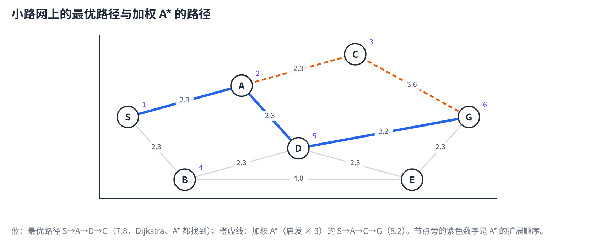
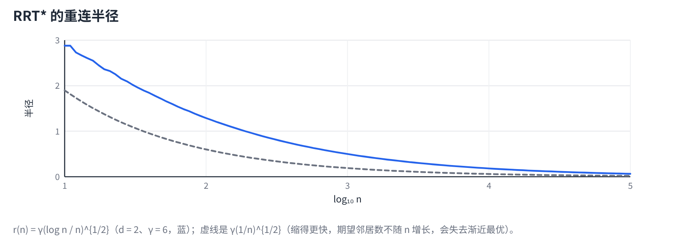
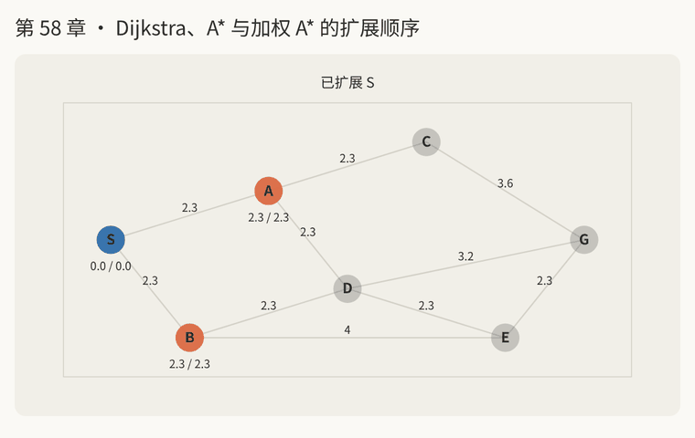

第 58 章 · 路径规划：Dijkstra 与 A、可采纳启发、构型空间、RRT 与 RRT、势场法
本地运行
git clone https://github.com/wikieden/math-and-eval-stats
cd math-and-eval-stats/code/notebooks
pip install jupyterlab torch numpy
jupyter lab ch58_path_planning.ipynb也可以下载后直接用 VS Code 打开 .ipynb 运行。需要 GPU 的章节在 Colab 里选「代码执行程序 → 更改运行时类型 → GPU」。
本章回答：最短路径怎么找？A* 为什么比 Dijkstra 少走很多弯路，启发函数要满足什么才不出错？机器人有大小，规划时怎么处理？高维空间（机械臂）没法画格子，采样规划怎么做，RRT* 为什么能越跑越好？势场法为什么会卡住？
讲解日期：2026-11-25 · 上一章：第 57 章 地图表示 · 下一章：第 59 章 神经场景表示
对应原文：LaValle《Planning Algorithms》math-and-eval-stats/materials/text/books/lavalle-planning-algorithms.txt（§2.2.2 前向搜索：Dijkstra 与 A，L1084 起；启发函数要是代价的下界 L1148–L1154）；Karaman & Frazzoli 2011math-and-eval-stats/materials/text/papers/rrt-star-sampling-optimal-1105.1186.txt（渐近最优 L180–L186；连接半径 r = γ(log n/n)^{1/d}，L676–L677）
本章缩写：g(n) = 从起点到 n 的已知代价；h(n) = 启发函数（到终点代价的估计）；f = g + h；C-space = Configuration space（构型空间）；PRM = Probabilistic RoadMap（概率路线图）；RRT = Rapidly-exploring Random Tree（快速扩展随机树）；RRT = 渐近最优的 RRT。全部缩写见 附录 · 缩写与术语表
讲解
第一步：Dijkstra：按已走代价从小到大扩展（2026-11-25）
类比：往池塘里扔石子，水波一圈圈往外扩，最先碰到终点的那一圈就是最短距离。
维护一个按 g 排序的优先队列，每次取出 g 最小的节点“扩展”（确定它的最短距离），更新邻居。边权非负时，取出的顺序就是最短距离的顺序。
例子（7 个节点的小路网，坐标见代码，S 到 G）：最短路径 S→A→D→G，代价 7.8；扩展顺序 S、A、B、C、D、E、G，7 个节点全扩展了一遍（往各个方向均匀地扩）。
一句话：Dijkstra 按已走代价 g 从小到大扩展，边权非负时保证最短，但会往所有方向扩。
第二步：A*：加上到终点的估计（2026-11-25）
f(n) = g(n) + h(n)，按 f 排序。h 是“到终点还要多少代价”的估计（LaValle §2.2.2，L1148–L1154）：
- 可采纳（h ≤ 真实剩余代价）：A* 返回的路径一定最优；
- 一致（h(u) ≤ w(u, v) + h(v)）：每个节点只扩展一次；
- h = 0 就退化成 Dijkstra；h 越接近真值，扩展越少。
例子（h = 到终点的直线距离，边长都 ≥ 直线距离，所以可采纳）：
| 方法 | 路径 | 代价 | 扩展节点 |
|---|---|---|---|
| Dijkstra | S→A→D→G | 7.8 | 7 |
| A*（h = 直线距离） | S→A→D→G | 7.8 | 6 |
| 加权 A*（3 × 直线距离，不可采纳） | S→A→C→G | 8.2 | 4 |
把 h 放大（加权 A）扩展得更少、更快，但不再保证最优：它被 C 离终点近“骗”了，没去验证经过 D 的更短路。实际系统常用加权 A 换速度，并给出 ε 倍以内的次优保证。

图 58-1 · 7 个节点的路网（边上是代价）；蓝色是最优路径 S→A→D→G（7.8），橙虚线是加权 A 找到的 S→A→C→G（8.2）；节点上的数字是 A* 的扩展顺序*一句话：A* 按 g + h 扩展，h 可采纳就最优；放大 h 更快但可能次优。
第三步：构型空间：机器人缩成点，障碍物膨胀（2026-11-25）
机器人有大小、有关节。构型空间把“机器人的一个完整姿态”当成一个点（移动机器人 (x, y, θ)、6 轴机械臂是 6 维），障碍物变成“会发生碰撞的姿态集合”。
例子（圆形机器人在平面上平移）：机器人半径 0.3、障碍物半径 0.5：在构型空间里机器人是一个点，障碍物膨胀成半径 0.8 的圆（Minkowski 和），面积变成原来的 2.56 倍。
ROS 的代价地图把障碍物按机器人半径“膨胀”就是这个意思（配合第 57 章的 ESDF：距离 < r 即碰撞）。机械臂的构型空间障碍没法显式画出来，只能逐点做碰撞检测：于是有了采样规划。
一句话：构型空间里机器人是一个点、障碍物按机器人形状膨胀；高维时只能逐点做碰撞检测。
第四步：采样规划：RRT 与 RRT*（2026-11-25）
RRT：从起点长一棵树，每次在空间里随机采一个点，找树上最近的节点，朝它走一小步，不碰撞就加进树。它“快速扩展”到空白区域，概率完备（只要有解，采样足够多一定找到），但找到的路径弯弯绕绕、不会变好。
RRT*（Karaman & Frazzoli，L180–L186）：加两步： 1. 新节点不一定连最近的点，而是在半径 r 内选“从起点过来代价最小”的父节点； 2. 再看半径 r 内的其他节点，如果改从新节点走更近，就改它们的父节点（重连）。
半径随节点数缩小（L676–L677）：
例子（d = 2、γ = 6）：n = 100、1000、10000 时 r = 1.29、0.50、0.18。半径缩得足够慢，保证渐近最优（节点数 → ∞ 时代价收敛到最优）；又缩得足够快，每次只连 O(log n) 个邻居。

图 58-2 · 横轴节点数（对数），纵轴重连半径 r(n) = γ(log n/n)^{1/2}；作为对照，虚线是 (1/n)^{1/2}（缩得太快，会失去渐近最优）一句话：RRT 随机扩展、概率完备但不变好；RRT* 在 r(n) ∝ (log n/n)^{1/d} 内选父节点并重连，渐近最优。
第五步：势场法：简单，但会卡在局部极小（2026-11-25）
目标处一个吸引势、障碍物周围一个排斥势，机器人沿总势场的负梯度走。计算极快，适合实时避障。
例子（一维：目标 x = 10，吸引势 ½(x − 10)²；障碍物 x = 5，排斥势 20/(x − 5)²）：从 x = 0 出发，停在 x = 3.195，吸引力和斥力在这里平衡，梯度为 0，但不是目标。二维里 U 形障碍物、两个障碍物之间的窄缝也会产生这种局部极小。
所以势场一般只用于局部避障，全局路径交给 A* / RRT*；或者用“导航函数”这类专门构造的、只有一个极小值的势场。
场景代码：OMPL 里的 RRT*（真实库接口；本书环境没装，没跑过）：
from ompl import base as ob, geometric as og
space = ob.RealVectorStateSpace(2); space.setBounds(0.0, 10.0)
ss = og.SimpleSetup(space); ss.setStateValidityChecker(ob.StateValidityCheckerFn(is_free))
ss.setStartAndGoalStates(start, goal); ss.setPlanner(og.RRTstar(ss.getSpaceInformation()))
ss.solve(1.0) # 跑 1 秒：时间越长路径越接近最优
一句话：势场法沿梯度走、极快，但吸引和排斥平衡处会卡住，只适合做局部避障。
动画演示：Dijkstra 和 A* 的扩展

可交互版：animations/58-path-planning.html（下拉切换 Dijkstra / A* / 加权 A*；滑块调已扩展的节点数）。
怎么看：
- 节点按扩展顺序一个个变成蓝色，橙色是优先队列里还在等的节点，旁边写着它的 g 和 f（第一、二步）；
- Dijkstra 往各个方向都扩；A* 偏向终点，少扩展一个；加权 A* 直奔离终点近的 C，结果代价更高；
- 右上角是当前找到的路径和代价。
练习与作答记录
题 1（第二步）：网格上 4 连通移动（每步代价 1），用曼哈顿距离当启发可采纳吗？如果允许对角移动（代价 √2）呢？
作答：（待作答）
题 2（第三步）：一个边长 0.4 的正方形机器人（不能转动）在平面上平移，一个半径 0.5 的圆形障碍物在构型空间里变成什么形状？
作答：（待作答）
题 3（第四步）：d = 3、γ = 6，n = 1000 时 RRT* 的重连半径是多少？
作答：（待作答）
口诀
Dijkstra 水波一圈圈，按 g 扩展保最短；
A* 加上 h，可采纳就最优，放大 h 快但会次优；
构型空间里机器人是点，障碍物按形状膨胀；
RRT 随机长树能找到，RRT* 选父重连越跑越好；
势场沿梯度走得快，平衡处会卡住。
本章复习卡片
ST189（Dijkstra 与 A、可采纳与一致的启发）、ST190（构型空间；RRT 与 RRT 的重连半径）、ST191（势场法的局部极小）。练习做完后，按答错、卡住的地方补上。
附录 · 延伸阅读
留给以后深入学习用，不影响本章主线。★ 是建议先读的。
推荐阅读
| 读什么 | 读哪里 | 读它为了什么 |
|---|---|---|
| ★ LaValle《Planning Algorithms》 | 第 2 章（§2.2.2，L1084 起）、第 4 章（构型空间）、第 5 章（采样规划） | 规划的标准教材 |
| ★ Karaman & Frazzoli 2011 | §3–4（L180、L676） | RRT* 与 PRM* 的渐近最优证明 |
| 《从零学 ROS 2》第 17 章 Nav2、第 18 章 MoveIt 2 | 全章 | 移动机器人和机械臂的规划栈 |
| 第 23 章 MDP 与 Bellman | 第一、二步 | 最短路是确定性 MDP 的特例 |
| 第 57 章 地图表示 | 第三步 | ESDF 与碰撞检测 |
数学原理
- Dijkstra 的正确性：边权非负时，当前 g 最小的节点不可能再被更短的路径更新。
- A 的最优性*：h 可采纳 ⇒ 终点被取出时 f = g ≤ 任何未扩展节点的 f ≤ 经过它的真实代价。
- 一致性 ⇒ 可采纳：h(终点) = 0 时，沿最优路径累加三角不等式即得 h ≤ 真实代价。
- RRT 的半径*：要让新节点周围期望有 Θ(log n) 个邻居（保证连通且渐近最优），半径的 d 次方要 ∝ log n/n。
公式清单
| 公式 | 意思 |
|---|---|
| f = g + h | A* 的优先级 |
| h(n) ≤ h*(n) | 可采纳 |
| h(u) ≤ w(u, v) + h(v) | 一致 |
| \(r(n) = \gamma(\log n/n)^{1/d}\) | RRT* 重连半径 |
| 障碍物 ⊕ 机器人 | 构型空间障碍（Minkowski 和） |
代码对照：把本章的数字用代码算一遍
代码在仓库本地
math-and-eval-stats/solutions/chapter-code/ch58_path_planning.py，配套测试tests/test_ch58.py：
bash cd math-and-eval-stats/solutions/chapter-code uv run python ch58_path_planning.py uv run pytest tests/test_ch58.py
讲义 ↔ 代码：
| 讲义 | 公式 | 写法 | 跑出来 |
|---|---|---|---|
| 第一步 Dijkstra | h = 0 | search(0) |
7.8，扩展 7 个 |
| 第二步 A* | h = 直线距离 | search(1) |
7.8，扩展 6 个 |
| 第二步 加权 A* | 3h | search(3) |
8.2 |
| 第三步 构型空间 | Minkowski 和 | cspace_area(0.5, 0.3) |
2.56 倍 |
| 第四步 RRT* | γ(log n/n)^{1/d} | rrt_star_radius(n) |
1.29、0.50、0.18 |
| 第五步 势场 | 负梯度 | potential_1d() |
停在 3.195 |
关键几行：
heapq.heappush(pq, (c + w + h[v], c + w, v)) # 按 f = g + h 入队
if u in closed: continue # 一致启发下每个节点只扩展一次
return gamma * (np.log(n) / n) ** (1 / d) # RRT* 的重连半径
代码里才看得到的 3 件事：
- 边权都不小于直线距离：这样直线距离启发才可采纳；如果某条边比直线距离还短（比如有“传送门”），A* 就可能出错。
- 加权 A 一扩展到终点就停*：它不检查队列里有没有更好的路径，这正是次优的原因。
- 没有在栅格上比较扩展节点数、也没有跑 RRT / RRT：在栅格地图上对比 Dijkstra / A 的扩展节点数并跑 RRT / RRT*，留给自己做（里程碑 ME-M34）。
自己改一改（不影响练习答案）：
- 把 C→G 的代价改回 2.9，三种方法的路径各是什么？
- 在
potential_1d里把障碍物移到 x = 12（目标后面），机器人能到达目标吗？